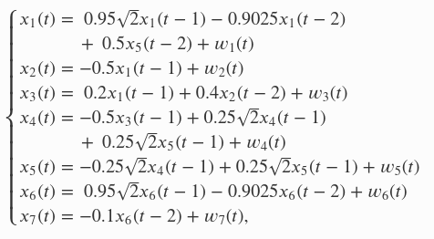
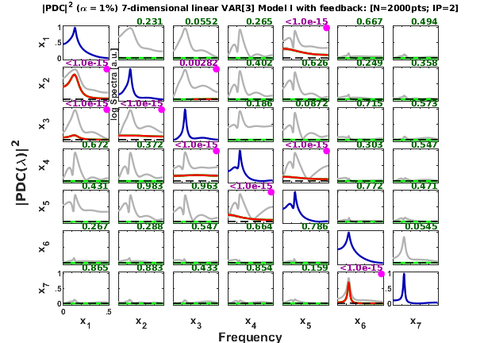
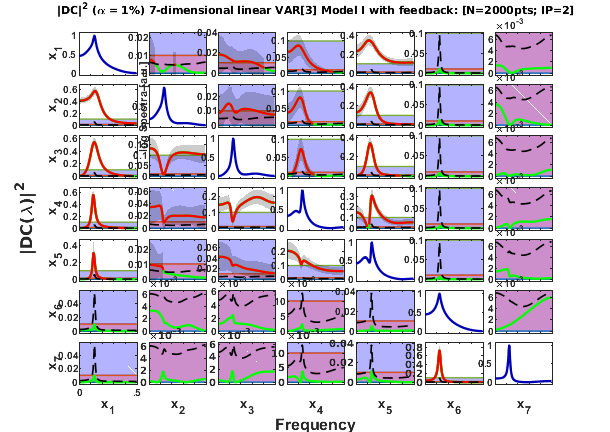

BACCALA & SAMESHIMA (2001b) - Model 1: 7-dim VAR[2] model with loop and feedback
*Description*: This is a toy model example that "mimicks local field potential measurements along hippocampal structures, is represented by the following set of linear difference equations with N = 7 structures", that is the Example Model I - 7-dimensional VAR[2] model with loop and feedback from
Baccala & Sameshima (2001b). Overcoming the limitations of correlation analysis for many simultaneously processed neural structures, Progress in Brain Research, 130:33--47.
http://dx.doi.org/10.1016/S0079-6123(01)30004-3
See also:
- Koichi Sameshima, Daniel Y. Takahashi, Luiz A. Baccala. On the statistical performance of Granger-causal connectivity estimators. Brain Informatics (2015) 2:119--133.
http://dx.doi.org/10.1007/s40708-015-0015-1
Contents
- See also: mvar, mvarresidue, asymp_pdc, asymp_dtf, gct_alg,
- Data sample generation
- Interaction diagram
- Equation Model I with feedback
- Data sample generation
- Data pre-processing: detrending and normalization options
- MVAR model estimation
- Granger causality test (GCT) and instantaneous GCT
- Original PDC estimation
- Matrix-Layout Plotting
- Generalized PDC estimation
- Matrix-Layout Plot
- Generalized DTF = DC estimation
- Matrix-Layout Plot
See also: mvar, mvarresidue, asymp_pdc, asymp_dtf, gct_alg,
igct_alg, xplot, xplot_pvalues
% (C) Koichi Sameshima & Luiz A. Baccalá, 2022. % See file license.txt in installation directory for licensing terms.
Data sample generation
clear; clc; format compact; format short
Interaction diagram

Figure 2a from Baccala & Sameshima. Biol. Cybern. 84:463-474, 2001.
Equation Model I with feedback

Note: "These equations are designed so that  behaves as an oscillator driving the other structures, either directly or indirectly, according to the diagram above. Note that the interaction between and is both via a direct path and via an indirect route through . The dynamics of the pair and is designed so that they jointly represent an oscillator, whose intrinsic characteristics are due to their mutual signal feedback but which are entrained to the rest of the structure via . To this structure it was added a feedback from to , which establishes a loop among structures 1 to 5. The signals and belong to a totally separate substructure where is designed to generate oscillations at the same frequency as ; does not feedback anywhere." (Reproduzed and modified from Baccala & Sameshima, 2001b)
behaves as an oscillator driving the other structures, either directly or indirectly, according to the diagram above. Note that the interaction between and is both via a direct path and via an indirect route through . The dynamics of the pair and is designed so that they jointly represent an oscillator, whose intrinsic characteristics are due to their mutual signal feedback but which are entrained to the rest of the structure via . To this structure it was added a feedback from to , which establishes a loop among structures 1 to 5. The signals and belong to a totally separate substructure where is designed to generate oscillations at the same frequency as ; does not feedback anywhere." (Reproduzed and modified from Baccala & Sameshima, 2001b)
Data sample generation
nDiscard = 5000; % number of points discarded at beginning of simulation nPoints = 2000; % number of analyzed samples points N=nDiscard+nPoints; % number of simulated points u = fbaccala2001b_model1_feedback( nPoints, nDiscard ); chLabels = {'x_1';'x_2';'x_3';'x_4';'x_5';'x_6';'x_7'}; fs = 1;
====================================================================================================
Linear VAR[2] Model I
Baccala & Sameshima. Prog Brain Research, 130:33--47, 2001.
x1-->x2 x1-->x3 x2-->x3 x3-->x4 x4==>x5 x5-->x1 x5-->x4 x6==>x7
====================================================================================================
Data pre-processing: detrending and normalization options
flgDetrend = 1; % Detrending the data set flgStandardize = 0; % No standardization [nChannels,nSegLength] =size(u); if nChannels > nSegLength, u = u.'; [nChannels,nSegLength]=size(u); end; if flgDetrend, for i=1:nChannels, u(i,:)=detrend(u(i,:)); end; disp('Time series were detrended.'); end; if flgStandardize, for i=1:nChannels, u(i,:)=u(i,:)/std(u(i,:)); end; disp('Time series were scale-standardized.'); end;
Time series were detrended.
MVAR model estimation
maxIP = 30; % maximum model order to consider. alg = 1; % 1: Nutall-Strand MVAR estimation algorithm criterion = 1; % 1: AIC, Akaike Information Criteria disp('Running MVAR estimation routine.') [IP,pf,A,pb,B,ef,eb,vaic,Vaicv] = mvar(u,maxIP,alg,criterion); disp(['Number of channels = ' int2str(nChannels) ' with ' ... int2str(nSegLength) ' data points; MAR model order = ' int2str(IP) '.']);
Running MVAR estimation routine. maxOrder limited to 30 IP=1 vaic=113222.193078 IP=2 vaic=106685.846964 IP=3 vaic=106732.415927 Number of channels = 7 with 2000 data points; MAR model order = 2.
Testing for adequacy of MAR model fitting through Portmanteau test
h = 20; % testing lag MVARadequacy_signif = 0.05; % VAR model estimation adequacy significance % level aValueMVAR = 1 - MVARadequacy_signif; % Confidence value for the testing flgPrintResults = 1; [Pass,Portmanteau,st,ths] = mvarresidue(ef,nSegLength,IP,aValueMVAR,h,... flgPrintResults);
====================================================================================================
MVAR RESIDURES TEST FOR WHITENESS
----------------------------------------------------------------------------------------------------
Good MAR model fitting! Residues white noise hypothesis NOT rejected.
Pass = 0.0377551
st = 922.135
Granger causality test (GCT) and instantaneous GCT
gct_signif = 0.01; % Granger causality test significance level igct_signif = 0.01; % Instantaneous GCT significance level flgPrintResults = 1; [Tr_gct, pValue_gct] = gct_alg (u,A,pf,gct_signif, flgPrintResults); [Tr_igct, pValue_igct] = igct_alg(u,A,pf,igct_signif,flgPrintResults);
====================================================================================================
GRANGER CAUSALITY TEST
----------------------------------------------------------------------------------------------------
Connectivity matrix:
NaN 0 0 0 1 0 0
1 NaN 0 0 0 0 0
1 1 NaN 0 0 0 0
0 0 1 NaN 1 0 0
0 0 0 1 NaN 0 0
0 0 0 0 0 NaN 0
0 0 0 0 0 1 NaN
Granger causality test p-values:
NaN 0.1274 0.0239 0.0278 0 0.5653 0.7627
0 NaN 0.1884 0.9251 0.4260 0.2726 0.1769
0 0 NaN 0.7175 0.2529 0.7180 0.4983
0.2690 0.0574 0 NaN 0 0.2606 0.8142
0.8112 0.1655 0.8629 0 NaN 0.8890 0.8552
0.5450 0.6848 0.0245 0.3409 0.2546 NaN 0.1024
0.8326 0.7319 0.5946 0.3184 0.5225 0 NaN
====================================================================================================
INSTANTANEOUS GRANGER CAUSALITY TEST
----------------------------------------------------------------------------------------------------
Instantaneous connectivity matrix:
NaN 0 0 0 0 0 0
0 NaN 0 0 0 0 0
0 0 NaN 0 0 0 0
0 0 0 NaN 0 0 0
0 0 0 0 NaN 0 0
0 0 0 0 0 NaN 0
0 0 0 0 0 0 NaN
Instantaneous Granger Causality test p-values:
NaN 0.2466 0.2013 0.3363 0.9042 0.1156 0.1561
0.2466 NaN 0.2947 0.9434 0.3389 0.9215 0.4002
0.2013 0.2947 NaN 0.7283 0.2005 0.5594 0.5308
0.3363 0.9434 0.7283 NaN 0.8228 0.4399 0.2115
0.9042 0.3389 0.2005 0.8228 NaN 0.9644 0.8334
0.1156 0.9215 0.5594 0.4399 0.9644 NaN 0.8908
0.1561 0.4002 0.5308 0.2115 0.8334 0.8908 NaN
>>>> Instantaneous Granger Causality NOT detected.
====================================================================================================
Original PDC estimation
PDC analysis results are saved in c structure. See asymp_pdc.m
nFreqs = 128; metric = 'euc'; alpha = 0.01; c = asymp_pdc(u,A,pf,nFreqs,metric,alpha); % Estimate PDC and asymptotic statistics c.pvaluesgct = pValue_gct; % Necessary for printing GCT c.Tragct = Tr_gct;
Matrix-Layout Plotting
flgPrinting = [1 1 1 2 3 1 2]; % GCT+Coh2 flgColor = 0; w_max=fs/2; strTitle1 = ['7-dimensional linear VAR[3] Model I with feedback: ']; strTitle2 = ['[N=' int2str(nSegLength) 'pts; IP=' int2str(c.p) ']']; strTitle =[strTitle1 strTitle2]; strTask = 'Baccala & Sameshima (2001b) Model I'; [hxlabel hylabel] = xplot(strTask,c,... flgPrinting,fs,w_max,chLabels,flgColor); xplot_title(alpha,metric,strTitle);
Notes: The spectral coherences are plotted in gray-line. You may notice that although the isolated structures 6 and 7 have power peak at the same frequency of remaining structures, they will most likely be present with low or no coherence with other structures. The red-lines indicate statistically significant PDC. You may also see occasional spurious false-positive connectivity detection, which may occur in approximately equal probability to the level of significance chosen for the null hypothesis for non-causality test, i.e. .
Theoretical PDC results from the original article, Baccala & Sameshima (2001b), Figure 6b reproduced here:
In this original article's figure the significant |PDC|s are depicted in shaded areas, and the spectral coherence in black-lines.
Generalized PDC estimation
PDC analysis results will be saved in d struct variable. See asymp_pdc.m
nFreqs = 128; metric = 'diag'; alpha = 0.01; d = asymp_pdc(u,A,pf,nFreqs,metric,alpha); % Estimate PDC and asymptotic statistics
Matrix-Layout Plot
flgPrinting = [1 1 1 2 2 0 2]; flgColor = [0]; w_max=fs/2; flgScale = 1; % y-axis = [0 1] flgMax = 'TCI'; flgSignifColor = 3; % red = significant, gree = nonsignificant [hxlabel,hylabel] = xplot(strTask,d,flgPrinting,fs,w_max,chLabels, ... flgColor,flgScale,flgMax,flgSignifColor); xplot_title(alpha,metric,'pdc',strTitle);
Generalized DTF = DC estimation
DC analysis results are saved in e structure. See asymp_dtf.m
nFreqs = 128; metric = 'diag'; alpha = 0.01; e = asymp_dtf(u,A,pf,nFreqs,metric,alpha); % Estimate PDC and asymptotic statistics
Matrix-Layout Plot
flgPrinting = [1 1 1 2 2 0 2]; flgColor = [1]; w_max=fs/2; flgScale = 3; % y-axis = [0 1] flgMax = 'TCI'; flgSignifColor = 3; % red = significant, gree = nonsignificant [hxlabel,hylabel] = xplot(strTask,e,flgPrinting,fs,w_max,chLabels, ... flgColor,flgScale,flgMax,flgSignifColor); xplot_title(alpha,metric,'dtf',strTitle);
In this example with feedback and closed-loop, theoretically, the structures {1,2,3,4,5} should be able to reach each other, henceforth all DC between these pairs of structures should be significant. But false negative DC connectivity may arise, more often for short simulation data segment.
- In the original article the amplitude of PDC or DTF was plotted. Here we chose to depict squared gPDC and DC, i.e. the xplot.m function was designed to only handle squared magnitude measures, , --- as the asymptotic statistics were formulated for these measures ---, and the spectral coherence.